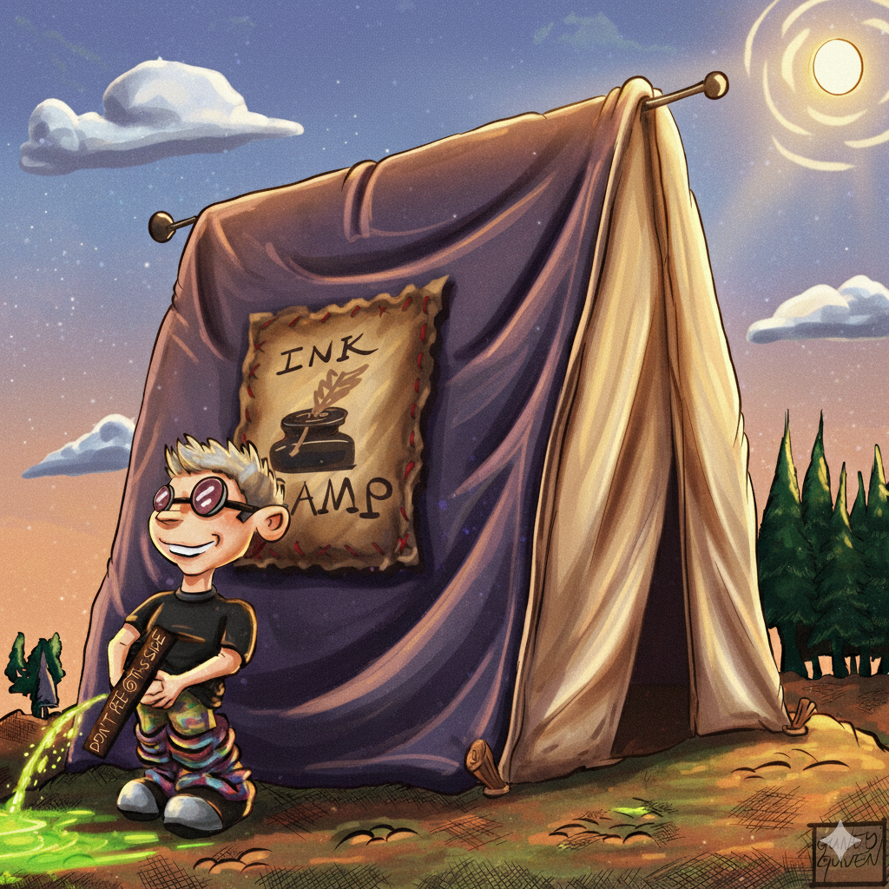
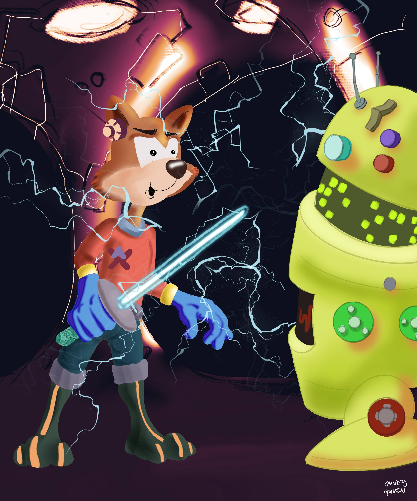
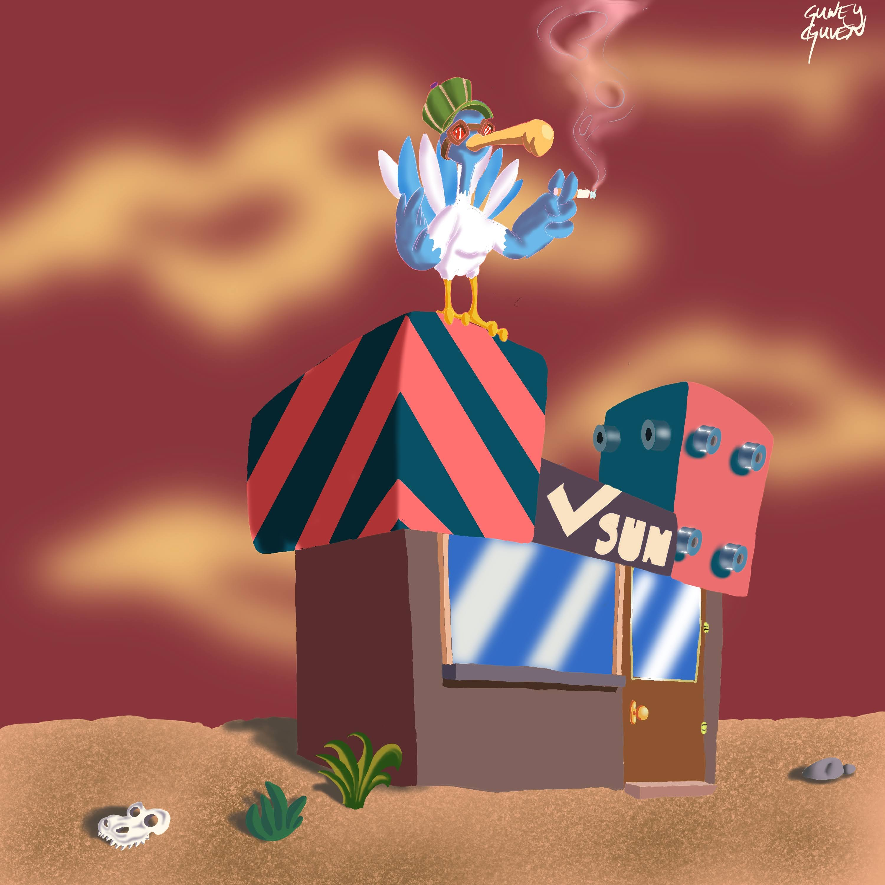
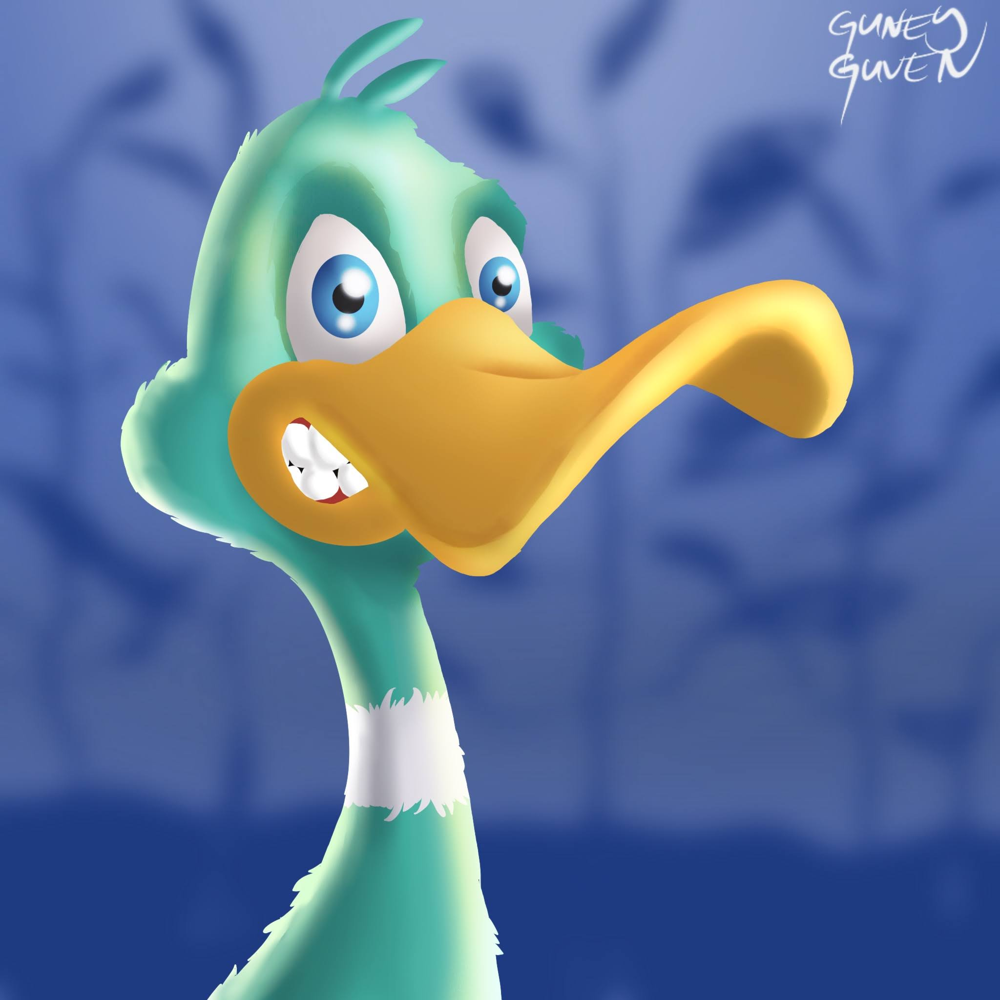
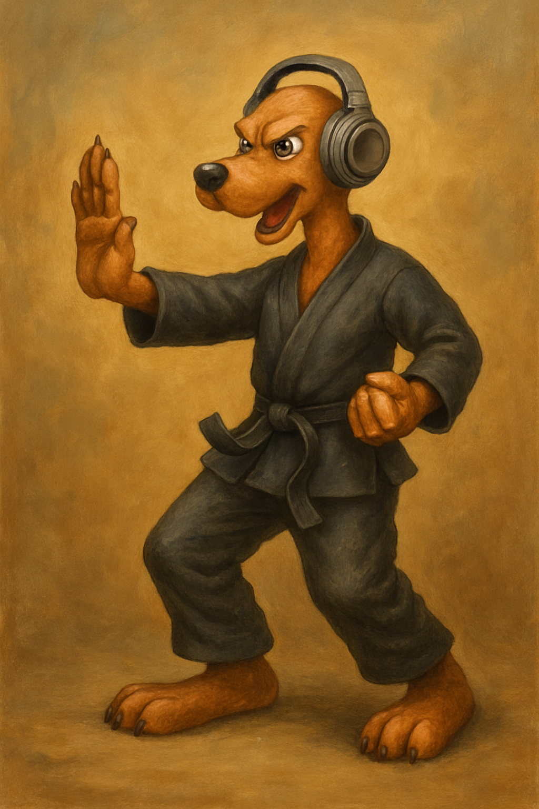
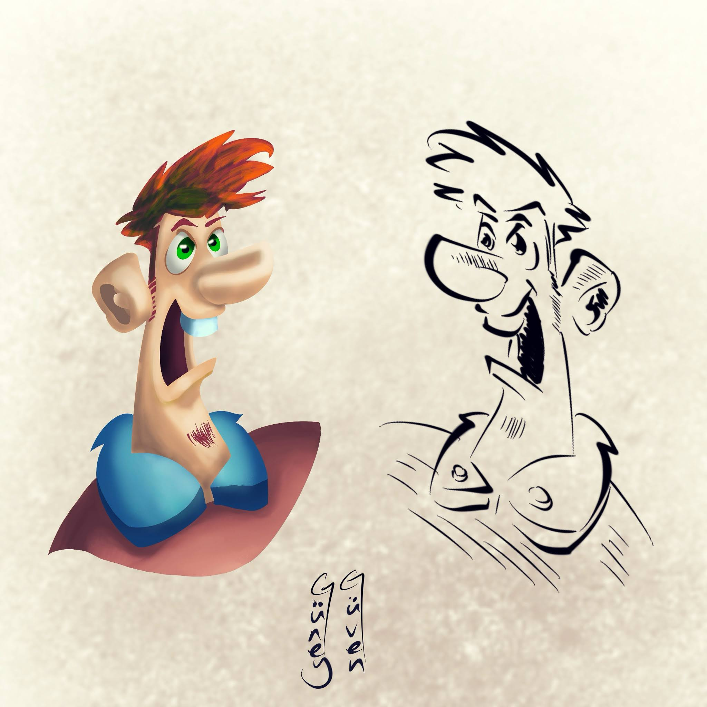
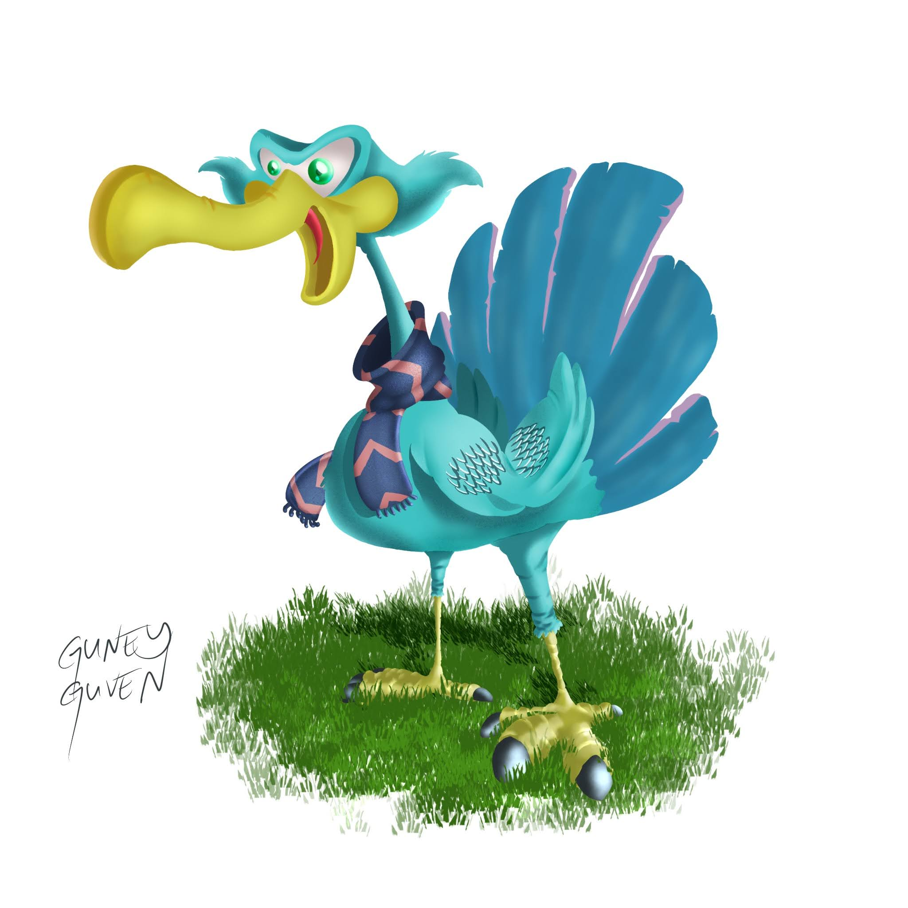

Art
Visual stories
from my world.
Digital art is another way I explore ideas — through characters, environments, sketches and visual experiments.
On television
Engineering meets art.
A conversation on engineering and art, my artistic journey and perspective, and how art may evolve in the future.








